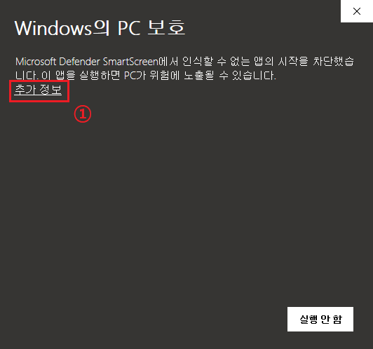
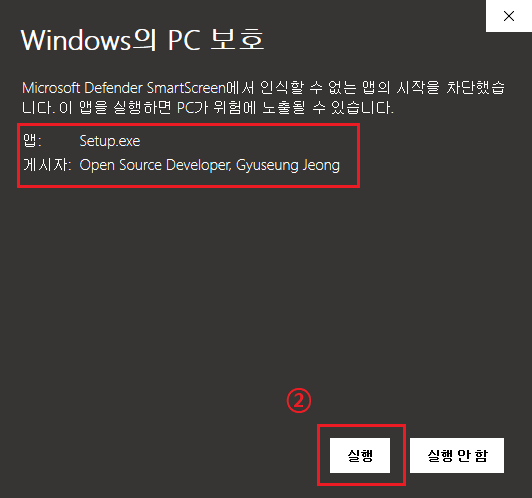

네모짓을 사용하면서 나타나는 일반적인 문제에 대해 다룹니다. 이 곳에 나와있지 않은 문제는 [문의하기]를 통해 문의 부탁드립니다.
문의하기
윈도우는 자체적으로 "인터넷에서 다운로드한 신뢰하지 못하는 실행 파일"을 차단합니다.
이는 네모짓에 바이러스가 들어있다고 알리는 것이 아니라, 단순히 출처가 불분명한 파일을 알리는 것입니다.
아래와 같이 [추가 정보]를 누른 후, [실행]을 누르시면 정상 실행 가능합니다.
 
네모짓은 최적의 사용 환경을 제공하기 위해 .NET Framework 4.7 버전을 이용하여 개발되었습니다. 그렇기 때문에, 사용자님의 컴퓨터에도 .NET Framework 4.7버전 이상이 필요합니다.
Windows 10은 기본적으로 .NET Framework 4.6 버전이 설치되어있으며, 이후 Windows 업데이트를 통해 .NET Framework 4.7도 기본 설치가 되어있으나, 아직도 일부 사용자분은 Windows 업데이트를 하지 않아서 .NET Framework 4.7버전이 설치 되어있지 않은 경우가 있습니다.
아래 링크에서 .NET Framework 최신 버전 Runtime을 다운로드 해주시면 정상 실행이 가능합니다.
.NET Framwork 다운로드
녹화를 방지하는 보안 프로그램이 있는 경우 녹화가 되지 않을 수 있습니다. 또한, 설정 파일의 손상일수도 있으므로 재설치를 권장합니다.
녹화가 안되는 이유는 다른 가능성이 너무 많습니다. 만약 재설치 이후에도 해결이 되지 않는다면 Windows 버전과 함께 이메일 문의 부탁드립니다.
또한, PC 녹화 장치 설치가 되지 않은 경우에도 해당 증상이 발생할 수 있습니다. [설정>녹화>PC 소리 장치 재설치]를 눌러서 재설치 부탁드리며, 혹시 해당 방법으로 오류가 나셔서 설치가 되지 않는다면 문의하기를 통해 오류 메시지를 전송해주신 다음, 아래 파일을 다운로드 받으셔서 수동으로 장치 설치를 해보시길 권해드립니다.
장치 설치 파일 다운로드
네모짓은 FFmpeg를 이용하여 녹화를 하게 됩니다. 그 중에서도 DirectShow 기술을 이용하여 녹화를 하는데, 이는 컴퓨터의 성능과 해상도에 따라서 심한 버벅임이 있을 수 있습니다. 이는 근본적인 문제이며, 네모짓의 녹화 방식이 바뀌지 않는 이상 완벽히 고치기 어려운 문제입니다. 다만 지속적인 업데이트와 개발로 이러한 성능 저하 현상을 최대한 줄이도록 하겠습니다.
일반적으로 넓은 영역을 녹화하실 때 이러한 버벅임을 느끼실 수 있으며, 컴퓨터 사양이 좋지 않다면 녹화 프레임레이트와 녹화 범위를 줄여서 녹화해주시면 증상이 개선될 수 있습니다.
이 역시 4번과 같은 문제로, 특히 넓은 범위를 녹화하고자 할 때 이런 문제가 발생할 수 있습니다. 이는 네모짓의 녹화 방식에 따른 문제로, 녹화 범위를 줄이면 쾌적한 녹화가 가능합니다.
다시 한 번 이런 문제가 있는 것에 대해 정말 죄송스럽게 생각하며, 더 좋은 녹화 기술을 도입할 수 있도록 하겠습니다.
문의하기